SocialCoding
- the beginnig -
Togo Terunori (@terut)
どう、最近
SocialCodingしてる？
ご清聴ありがとうございました
SocialCodingとは何か？


つまるところ、ぎっはぶ
That's all.
英語覚えられるし、ぎっはぶすごい
RubyでSocialCoding
ソーシャルコーディングの世界 (a_matsudaさん)
http://speakerdeck.com/u/a_matsuda/p/social-coding
Rubyはキメると気持ちいい (Matz)
みんなでキメると集団トランス状態
どう、最近トランスしてる？
宣伝
最近、ぎっとは部作りました
先生、ゴットハンド、僕が強制的にメンバーになりました
だがしかし、何をするのかよく分かりません
なぜSocialCodingなのか？
ライブラリを公開してる人はすごい
pull requestを送る = コードレビュー
すごい人からアドバイスをもらえる
同じバグ踏み、同じ作業を繰り返すのはDRYですか？
Railsやってるなら DRY! DRY!!
pull requestで救われる人がいる
I used to wanna be a GitHubber, Then i took an arrow in the knee.
(超訳) やってみたいんだけど、膝に矢を受けてしまってな…
pull requestできる技術力がないんですが？
僕もないよ？
できることをやればいんじゃないのん？
Issueをあげるだけならできませんか？
Wikiを書くだけでもいいんだよ？
英語できませんですし、おすし？
勉強しろ
SocialCodingではヘタな英語とCodeで会話する
最悪、Codeさえあれば会話できる
僕は英語できませんけど、Naver辞書はすごい
僕のクソな英語でも
typoとか誰かが直してくれる
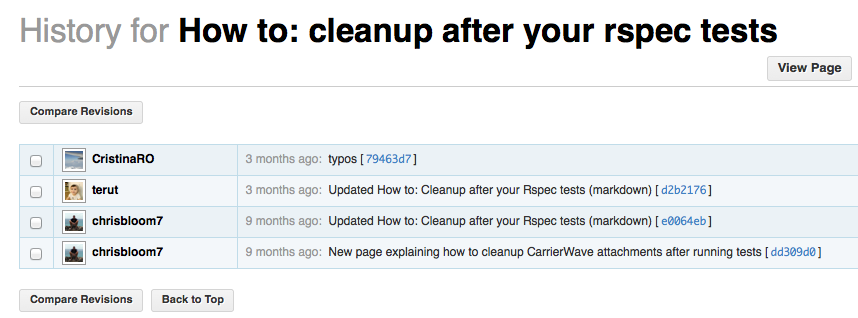
SocialCodingとは何か？
a_matsudaさんは言った
人間讃歌!!
自由、友愛、平等!!
僕らは基本的人権と参政権を手に入れた!!!
であると!
pull request 取り扱い説明書
fork
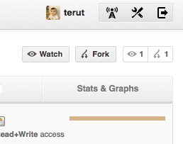
fork
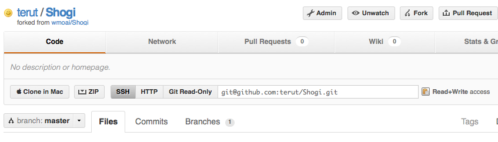
clone & create branch
$ git clone git@github.com:terut/Shogi.git
$ cd Shogi
$ git checkout -b urawaza
clone & create branch
masterにpushをするのは邪道
変更を表す作業用branchを作成
edit & pull request
$ vim README.md
$ git add -A
$ git commit -m 'Write README.md.'
rebase before push
$ git remote add upstream git://github.com/wmoai/Shogi.git
$ git stash
$ git checkout master
$ git pull --rebase upstream master
$ git checkout urawaza
$ git rebase master urawaza
rebase before push
大事なのは本流の差分をpull request前に取り込むこと
メンテナは忙しいのでrebaseで追従しておくのが優しさや！
あとは git stash pop とかで作業を再開する
squash commit & push
$ git rebase -i master
$ git push origin master
$ git push orgin urawaza
squash commit & push
commitを小さな変更単位にまとめる
こうすることでpull requestを送った場合に変更が追いやすい
アトミックなコミットとか言いますよね
pull request
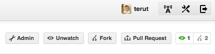
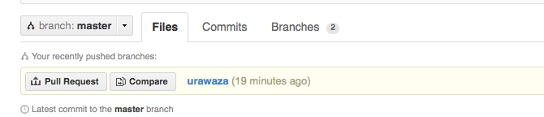
pull request
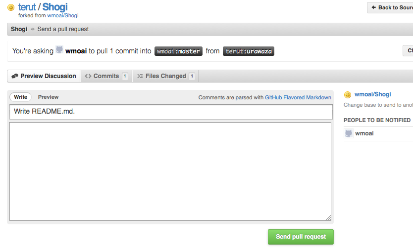
after pull request
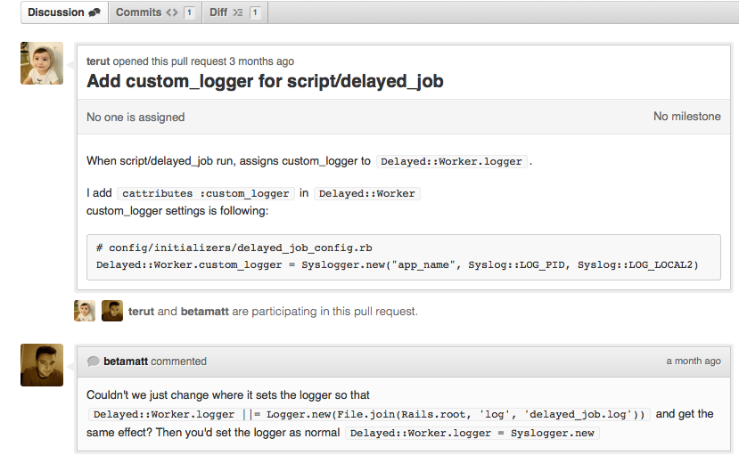
discuss about pull request
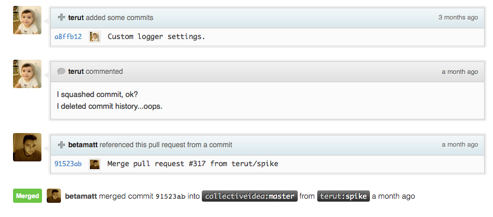
welcome to the contributor list
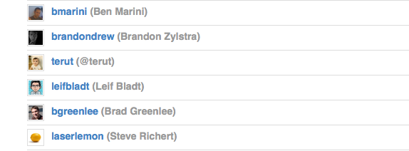
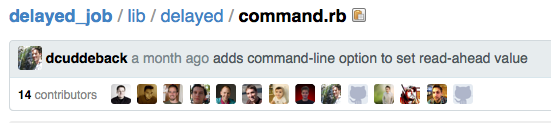
これが僕の技術レベルです
@上司 san!
Github 有料プランはよ!!
みんなでpull requestしてトランスしようず
GitLabは誰も食いつきませんでした
coderwall
そしてcoderwallのleaderboardへ
http://coderwall.com/leaderboard
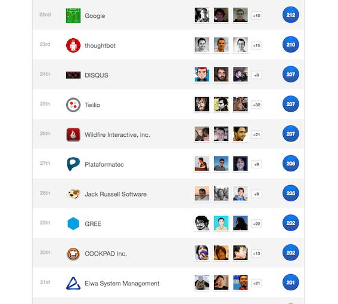